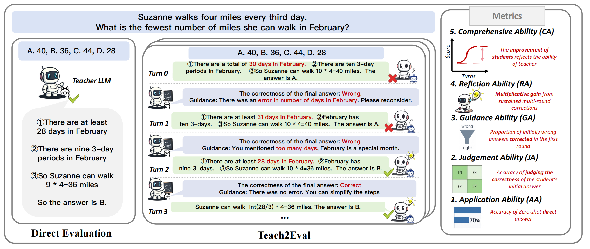
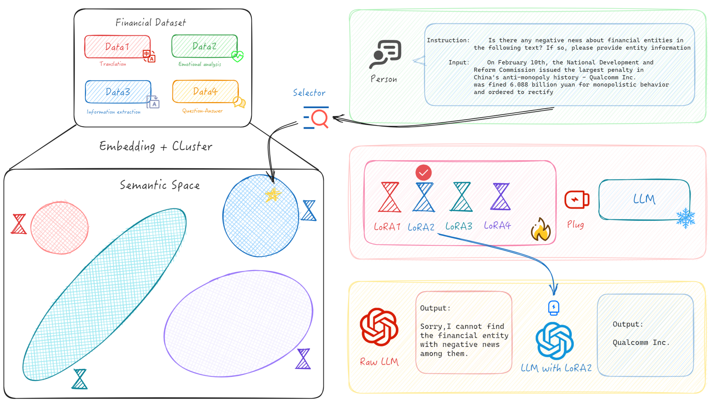

|
Yuhang Zhou I'm a First-year Ph.D. candidate at the School of Computer Science and Technology, Fudan University, Shanghai, China. I am also conducting research at the Institute of FinTech at Fudan University and Shanghai Innovation Institute . I am advised by Prof. Guangnan Ye and Prof. Yixin Cao at FDU and SII, also received guidance from Prof. Xipeng Qiu. Previously, I obtained a Bachelor's degree in Internet of Things Engineering from Jiangnan University in 2022, advised by Prof. Ya Guo at Key Laboratory of Advanced Control in Light Industry Processes, Ministry of Education.
|

|
Research: Scalable Evaluation and Evolution of LLMs, Fintech, AI for ArtI am very interested in the scalable evaluation and evolution of large language models, aiming to enable iterative evolution of LLMs and enable comprehensive evaluation in a more automated way. At the same time, I have also done some fintech work in the past.
|
Publications |
|

|
Teach2Eval: An Indirect Evaluation Method for LLM by Judging How It Teaches
Yuhang Zhou*, Xutian Chen*, Yixin Cao, Zhiheng Xi, Yu He, Siyu Tian, Xiang Liu, Jian Zhang, Chuanjun Ji, Guangnan Ye, Xipeng Qiu Under Review, 2025 arXiv |

|
Are Large Language Models Rational Investors?
Yuhang Zhou, Yuchen Ni, Zhiheng Xi, Zhangyue Yin, Xiang Liu, Jian Zhang, Sen Liu, Yixin Cao, Xipeng Qiu, Guangnan Ye, Hongfeng Chai Findings of ACL, 2025 arXiv |

|
R3-NL2GQL: A Model Coordination and Knowledge Graph Alignment Approach for NL2GQL
Yuhang Zhou, Yu He, Siyu Tian, Yuchen Ni, Zhangyue Yin, Xiang Liu, Chuanjun Ji, Sen Liu, Xipeng Qiu, Guangnan Ye, Hongfeng Chai Findings of EMNLP, 2024 arXiv |
|

|
SilverSight: A Multi-Task Chinese Financial Large Language Model Based on Adaptive Semantic Space Learning
Yuhang Zhou, Zeping Li, Siyu Tian, Yuchen Ni, Sen Liu, Guangnan Ye, Hongfeng Chai CCL / Journal of Chinese Information Processing, 2024 arXiv |
|
|
Research on Improving the Performance of Tri-ellipsoid Multi component Optical Sensors
Yuhang Zhou, Yuchen Ni, Wei Ge, Ya Guo Laser & Optoelectronics Progress, 2023 arXiv |
Selected Projects |

|
ChatReport: A Financial Research Report Generation Approach Based on Internet of Agents
Yuhang Zhou, Yuchen Ni, Yunhui Gan, Siyu Tian, Jiahui Zhang, Hongjie Xia, Yu Liu, Guangnan Ye Using multi-agent collaboration technology based on LLMs to complete the writing of financial multimodal long texts (such as financial research reports, bond applications, etc.), using a combination of large and small models to extract causal relationships from past research report data, simulating multi role interactions to form a document writing team, and achieving low-cost, long text financial document writing. The project has been implemented and applied in companies such as Guotai Junan Securities, DataGrand, and Baidu. National 1st Prize, the Graduate Financial Technology Innovation Competition, 2023 Top 10 Excellence Awards, the 2024 LLM Financial Application Innovation and Practice Competition, 2024 |
|
|
Ink Wash Horizons: Digital Light and Shadow
Yuhang Zhou*, Hoho Wang* Based on a collaborative modeling approach, this work aims to build an AI system that simulates Mr. Ku Chan’s artistic expression by decomposing his characteristics into two components: cognitive thinking patterns and artistic style. The core technical pathway consists of two dimensions: on one hand, a large language model is trained on Mr. Ku Chan’s textual corpus—including books, interviews, and creative notes—to construct a model of his cognition and aesthetic decision-making, thereby simulating his creative logic and expressive style; on the other hand, an image generation model performs fine-grained representation learning on a dataset of his artworks to build a high-fidelity style generation engine. The two components are cascaded to achieve synergy: the language model outputs semantic descriptions and compositional logic aligned with the artist’s cognitive traits, which serve as conditional inputs to drive the image generation model in producing visually coherent works with both stylistic fidelity and semantic depth. The overall architecture forms a closed loop of “semantic generation → visual mapping,” realizing a digital twin that bridges simulated artistic thinking with authentic visual style reproduction. This approach demonstrates significant advantages in style controllability, interpretability of the creative process, and artistic consistency, offering a technically rigorous yet humanistically grounded pathway for AI-driven artistic creation. Exhibited in Baotu Spring Scenic Area(趵突泉景区), Jinan City, Shandong Province. Aired on CCTV-1's(央视一套) "Chinese Ink Art Gala". |
Internship |
|
Invited Talks |
|
Selected Awards |
|